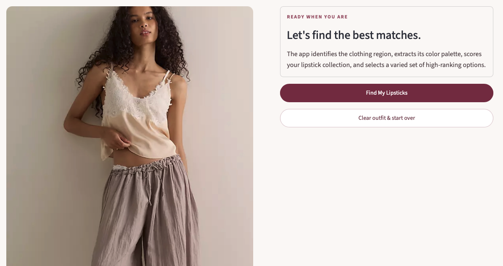
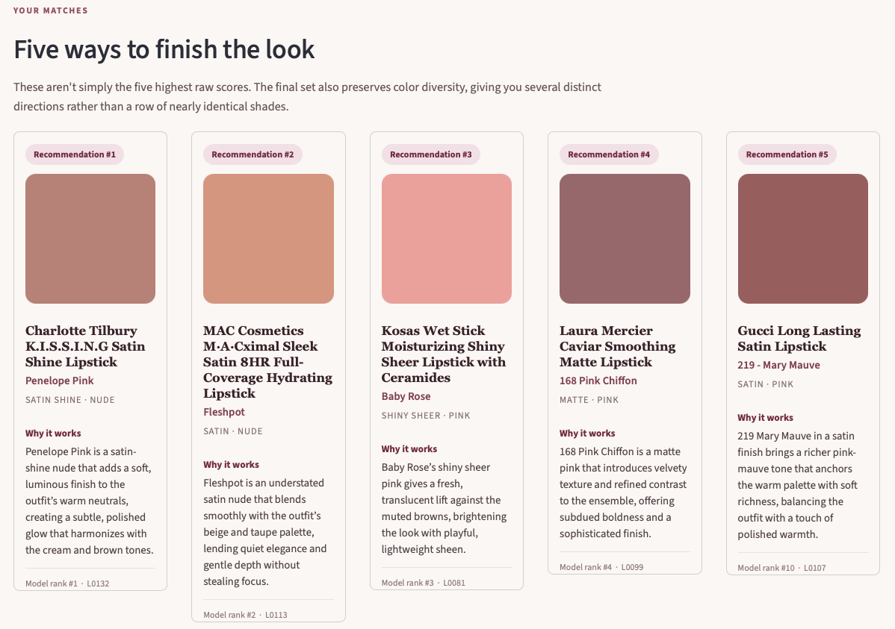
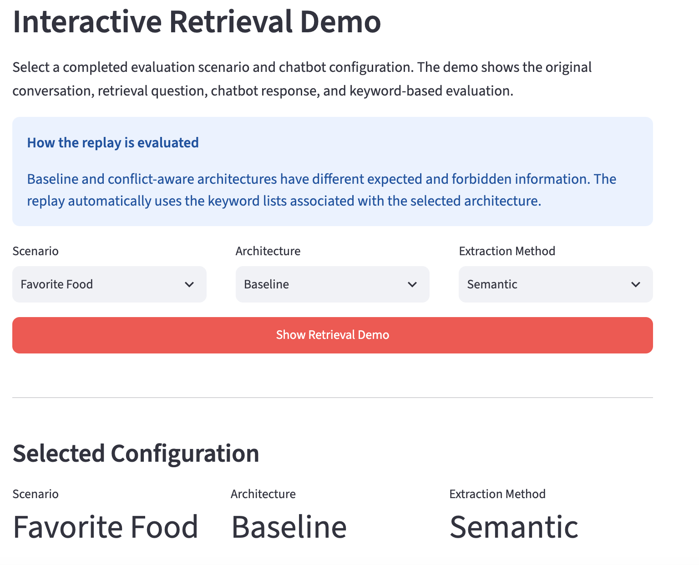
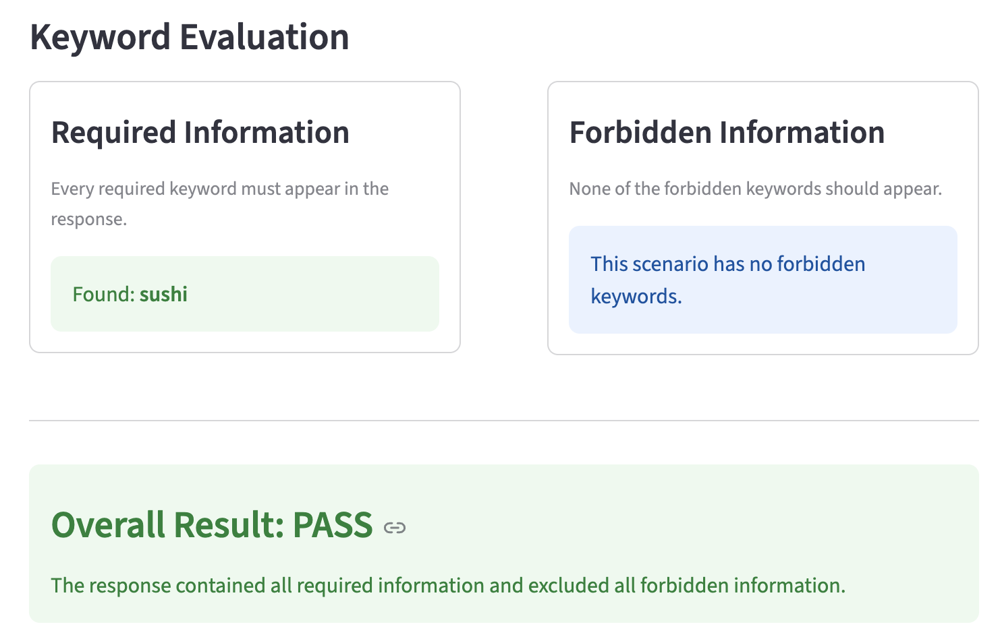
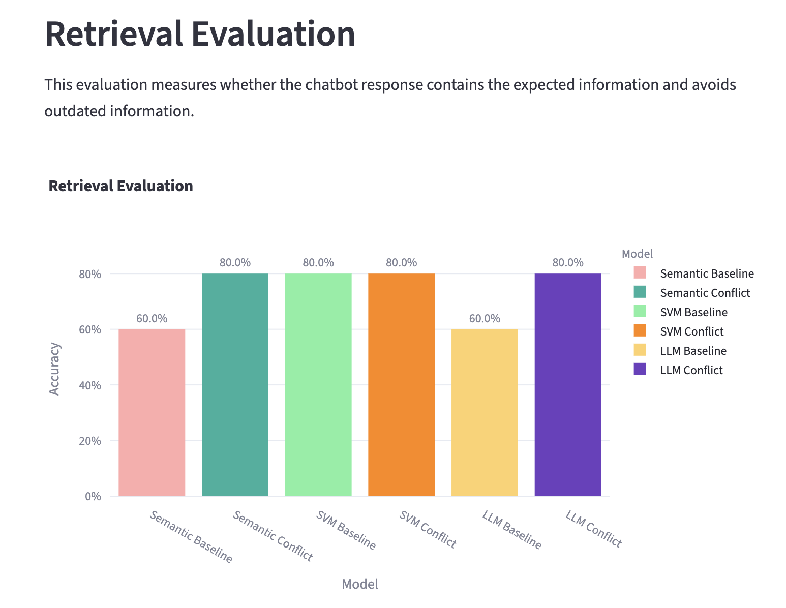

Roshan Moazed
Applied Mathematics MS Student @ Northeastern | Data Science, Machine Learning & AI
About
I am a Master's student in Applied Mathematics at Northeastern University graduating in May 2027, with experience building end-to-end machine learning and AI systems for real-world applications. My projects span multimodal AI, recommendation and ranking systems, forecasting, optimization, customer analytics, computer vision, and conversational AI.
I am particularly interested in applying statistical modeling, machine learning, and modern AI systems to problems involving personalization, customer behavior, recommendation, forecasting, and intelligent decision systems. I enjoy projects that combine rigorous modeling and experimentation with practical deployment, evaluation, and interactive tools that translate model outputs into useful decisions.
Featured Projects
Note: Some apps may take a few seconds to load or require reactivation if they have been inactive.
Multimodal AI Lipstick Recommendation System
Built and deployed an end-to-end multimodal recommendation system that analyzes an uploaded outfit image and recommends compatible lipsticks from a persistent product catalog.
The system combines clothing segmentation, CIELAB perceptual color analysis, and 23 engineered outfit-lipstick features with a learned ranking model. To generate training supervision, I used Qwen2.5-VL-7B as a multimodal weak-preference teacher, evaluated lipstick pairs in both presentation orders, and discarded order-sensitive judgments to reduce positional bias.
Stable pairwise preferences were converted into latent compatibility utilities using Bradley-Terry modeling and then distilled into a lightweight Ridge ranker. The production system can therefore score an entire lipstick collection without requiring the large multimodal model during inference.
After expanding development coverage from 22 to 71 independent outfit contexts, the frozen ranker achieved 80.6% concordance across 160 order-invariant multimodal teacher preferences on 10 prospectively held-out outfits. Final recommendations use diversity-aware selection to balance predicted compatibility with perceptual variety.
App Preview


Memory-Augmented Conversational AI System
Built a modular memory-augmented conversational AI framework to investigate how different memory extraction and management strategies affect long-term personalization in LLM-powered chatbots.
The system compares three memory extraction approaches: semantic similarity using text embeddings, a supervised Support Vector Machine classifier, and LLM-based structured extraction. Messages identified as meaningful long-term memories are embedded and stored in Pinecone for semantic retrieval during future conversations.
I also implemented and evaluated two memory-management architectures: a baseline system that independently stores extracted memories and a conflict-aware system that detects duplicate or contradictory information and updates obsolete memories. In retrieval evaluation, the conflict-aware architecture improved accuracy from 60% to 80% for both the semantic-similarity and LLM extraction systems.
The accompanying Streamlit application provides an interactive chatbot, live visibility into memory extraction and storage, a semantic retrieval demonstration, memory replay tools, and quantitative comparisons across model architectures.
App Preview



Retail Demand Forecasting & Inventory Optimization Dashboard
Built an end-to-end retail demand forecasting system using the Favorita grocery sales dataset. The project compares XGBoost models against naive time-series baselines, engineers lag and rolling-window features, and translates forecasts into inventory recommendations through an interactive Streamlit dashboard.
The dashboard includes a forecasting command center, actual-vs-predicted sales visualizations, product-family comparisons, feature importance analysis, and an inventory simulator that adjusts recommendations based on volatility and business risk.
App Preview


Projects
Note: Some apps may take a few seconds to load or require reactivation if they have been inactive.
E-Commerce Recommender System
Built an end-to-end recommendation system using real e-commerce interaction data. Compared popularity-based simple and weighted recommendations with item-based collaborative filtering and deployed the final system in an interactive Streamlit dashboard.
The collaborative filtering model improved Hit Rate at 10 by approximately 4.3x over the popularity baseline, demonstrating the value of personalized behavioral signals for product recommendation.
App Preview


Customer Segmentation and Targeted Marketing
Developed a customer segmentation system using retail transaction data to group customers into distinct behavioral segments. Built an interactive dashboard to explore segment characteristics and simulate how different targeting strategies could influence revenue and marketing impact.
App Preview


Bike Demand and Pricing Optimization
Built a machine learning pipeline to predict bike rental demand and extended it into a pricing optimization framework using adjusted demand, elasticity, and a baseline price. Created a Streamlit app to simulate pricing scenarios, estimate revenue impact, and demonstrate how pricing decisions interact with predicted demand.
App Preview

Brain Hemorrhage Segmentation and Classification
Built a computer vision pipeline for brain hemorrhage segmentation and classification using multi-view medical imaging data. The project involved intensive preprocessing, multi-channel image modeling with U-Net and ResU-Net architectures, segmentation evaluation, and deployment through an interactive Streamlit application.
This project demonstrates deep-learning model development, medical-image preprocessing, segmentation workflows, and end-to-end deployment for a technically complex computer vision problem.
App Preview

Skills
scikit-learn, XGBoost, PyTorch, TensorFlow, Support Vector Machines, Ridge Regression, Recommendation Systems, Ranking Models, Preference Learning, Weak Supervision, Time Series Forecasting, Computer Vision, Multimodal AI, NLP, LLMs, Deep Learning
Vision-Language Models, Qwen2.5-VL, Image Segmentation, SegFormer, CIELAB Color Analysis, CIEDE2000, Perceptual Feature Engineering, U-Net, ResU-Net, Multimodal Weak Supervision
OpenAI API, Pinecone, Vector Databases, Semantic Retrieval, Memory-Augmented AI, sentence-transformers, Hugging Face Transformers, Structured LLM Outputs, Text Embeddings, Prompt Design
Bradley-Terry Models, Pairwise Preference Modeling, Regularized Regression, Model Distillation, Prospective Holdout Evaluation, Baseline Comparison, Model Evaluation, Experimental Design, Bias and Stability Analysis
Data Preprocessing, Feature Engineering, Supervised Learning, Unsupervised Learning, Clustering, Collaborative Filtering, Model Evaluation, Forecast Evaluation, Experimentation, Customer Analytics, Retail Analytics
Python, pandas, NumPy, scikit-learn, PyTorch, TensorFlow, XGBoost, OpenCV, Hugging Face Transformers, Streamlit, Plotly, SQLite, Pinecone, Git, GitHub, Data Visualization
Recommendation and Ranking, Forecasting, Optimization, Personalization, Business Simulation, Dashboard Development, Retrieval Systems, Model Comparison, Decision Support, Production-Oriented ML Pipelines